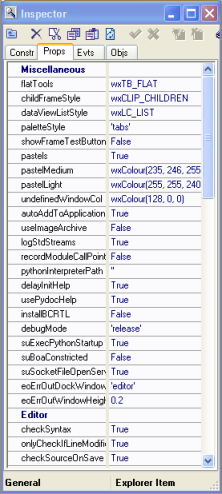
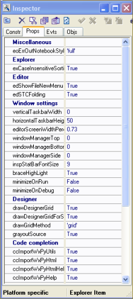

| Getting Started Guide for Boa Constructor |
| Getting Started Guide for Boa Constructor |
|  |
 |
 |
| # Info that will be filled into
the
comment block. (Edit->Add module info) # Also used by setup.py staticInfoPrefs = { 'Purpose': '', 'Author': '<your name>', 'Copyright': '(c) 2004', 'Licence': '<your licence>', 'Email': '<your email>', } |
| """ Demonstrates how to change
system
constants as a plug-in """ import sourceconst # The order of (Name)s may change and lines may also be removed sourceconst.defInfoBlock = '''# -*- coding: iso-8859-1 -*-# #----------------------------------------------------------------------------- # Name: %(Name)s # Purpose: %(Purpose)s # # Author: %(Author)s # # Created: %(Created)s # RCS-ID: %(RCS-ID)s # Copyright: %(Copyright)s # Licence: %(Licence)s #----------------------------------------------------------------------------- ''' import Preferences # (Name)s not in the original dictionary needs to be added # New field: %(NewField)s #Preferences.staticInfoPrefs['NewField'] = 'Whatever' |
| # -*- coding: iso-8859-1 -*-# #----------------------------------------------------------------------------- # Name: Frame1.py # Purpose: # # Author: Werner F. Bruhin # # Created: 2005/12/03 # RCS-ID: $Id: node31.html,v 1.1.2.1 2005/03/14 09:23:09 wbruhin Exp $ # Copyright: (c) 2004 - 2005 # Licence: Shareware, see license.txt for details #----------------------------------------------------------------------------- |
| Getting Started Guide for Boa Constructor |